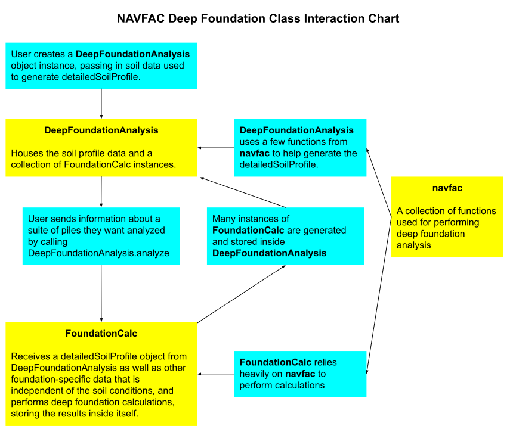

NOTE: Following the removal of the Heroku Free Tier, this application is currently broken until I upgrade to a paid plan or find a different back-end provider.
The challenge
The calculation of axial load capacity for deep foundations is tedious to perform by hand, and layered soil profiles with varying parameters become nearly impossible to analyze without errors. The goal of this application is to automate the analysis of a suite of deep foundations with variable width and embedment depth for complex soil profiles.
The process
I created a package of engineering functions to perform the axial load capacity analysis based on the NAVFAC methodology and wrote unit tests to ensure my functions work as expected. Then, I built and hosted a REST API with an Express server allowing users to create an account and save their projects. Finally, I designed a web application with React that consumes the API and my calculation package to perform engineering analyses and provide a detailed output of the calculations.
The goal
A full-stack web application that simplifies and greatly accelerates the design of deep foundations for axial load capacity. Users are able to save and modify their projects, and they can download a detailed report containing the calculations for their suite of foundations. Whereas the analysis of a single foundation in a uniform soil could take 10 minutes to compute, my application enables the analysis of hundreds of foundations in a complex soil profile within seconds.
My development process
The construction of this application was divided into three major parts which I’ll present in order. Ultimately, the process was iterative, but in general, my work was done in this order:
- The calculation package
- The API (Backend)
- The user application (Frontend)
The Calculation Package
Given that my goal was to calculate the axial capacity for a deep foundation, I obviously needed to implement the logic which would do that for me. The calculations are adapted from the NAVFAC Foundations & Earth Structures Design Manual 7.02, last edited September 1986. While the design manual seems old (and it is!), this methodology is still in common use by geotechnical engineers.
Because this is a complex calculation with many steps, it was important to divide the work up into many smaller functions that perform tiny parts of the analysis. By doing that, I was able to write unit tests for each function that would ensure each step of the calculation was done correctly. Additionally, splitting the calculations into many smaller functions made it easier to read, understand, and document each function.
So how did I go about planning out and writing my functions? In this case, I started at the end and worked backwards. The final result, the axial capacity, is the sum of the skin friction and the end bearing (You don’t need to understand what those terms mean). Ok, so how do I get the skin friction and end bearing? Well, the skin friction is the sum of the skin frictions for each layer in my soil profile. So how do I get the skin friction for a single layer? And how do I get the values required to perform THAT calculation? Following this trail all the way down eventually led me to the beginning of the calculation suite, which is where the user needs to input their project details.
After writing and testing each individual function, I needed some kind of interface that would take in the user’s project details and perform the relevant calculations with them. To that effect, I created a class called DeepFoundationAnalysis that would receive every detail regarding the soil conditions into its constructor and perform some initial calculations to process the soil data. A second class, called FoundationCalc, could receive the processed soil data from the DeepFoundationAnalysis along with some information about a specific foundation to be analyzed, perform the whole analysis, and save the calculation details in an object to be accessed later. With this infrastructure in place, the user could then call a function called analyze() within the DeepFoundationAnalysis instance that receives information about a suite of foundations to be analyzed. The analyze() function then creates a FoundationCalc for each combination of width and bearing depth specified by the user and stores the entire calculation suite in a property called calculations.
Essentially, the entire calculation package can be implemented into an application with a few lines of code:
// Create an instance of DeepFoundationAnalysis with the required inputs
let myAnalysis = new DeepFoundationAnalysis(
layerDepths, layerNames, layerUnitWeights, layerPhis, layerCohesions,
groundwaterDepth, increment, ignoredDepth);
// Call analyze() with the required inputs to create several instances of
// FoundationCalc behind the scenes and save results into myAnalysis
myAnalysis.analyze(material, pileType, widthArray,
bearingDepthArray, FS, ignoredDepth);
// Access the calculation results with the calculations parameter
console.log(myAnalysis.calculations.compressionAnalyses;
console.log(myAnalysis.calculations.tensionAnalyses;

With the calculation package out of the way, all I had left to do was to design and build an entire full stack application!
The API (Backend)
For the backend, I chose to build an Express server and host it with Heroku for two main reasons—It works well, and It’s what I know. This API didn’t need any features that previous APIs I’ve built lacked. I just needed a collection of endpoints for reading, writing, updating, and deleting data associated with user accounts, and some simple security features to secure my users’ data. I’ve written about my process for creating an API with Express for previous projects, so I’ll just give a quick overview here.
This API uses basic http authentication to log in a user. After logging in, the user gets a JSON Web Token (JWT) which must be included in the header of each subsequent request to verify the user’s identity. The JWT is encoded with a secret key, and the user ID encoded in the JWT must be that of the user the request is trying to access, otherwise the request will fail.
The API is connected to a MongoDB server that stores information about the user and their projects. The calculated results are not stored on the server because that would eat up a lot of storage space, and the calculation runs quickly enough that it can easily be redone on the client side whenever they want to see the results. Instead, only the project data required to reproduce the calculation results is stored on the server, along with timestamps for the project creation date and the date the project was last modified.
The User Application (Frontend)
The architecture for my frontend application was selected based on the same logic as my API. I built it with React because I am comfortable working with React. Routing is handled using hash routing with React Router DOM. I wanted the application to be as simple as possible to facilitate its one primary task—to perform foundation calculations. With that in mind, I created some simple views allowing users to register, login, create projects, and load existing projects to edit them.
The two most important views for this project are the interface for inputting project data and the results page which renders the results of the calculation.
Project Edit View
If I wanted users to be successful with my application and enjoy using it, the project edit view needed to be as sleek and intuitive as possible. With that in mind, I split the window into two main sections, one for inputting soil data, and one for inputting foundation details. While there is no getting around the fact that the data input in inherently dense, I tried to use white space and padding effectively to prevent the user from feeling cramped or confused. To reduce clutter on the screen, the basic project info (Name, Client, Engineer, Notes) is hidden initially unless the user presses a button to show those fields. I did this because the basic project info is less likely to change between calculation runs, and it has no effect on the actual calculated output.
For the individual data inputs, I tried to reduce confusion as much as possible by using dropdown selectors where possible and strategically placing written explanations of what is expected from the user. When the user is ready to analyze their project, they press the big blue button at the top of the screen. This triggers a comprehensive data validation that will inform the user if and where they need to fix their input parameters. If everything is in order, the user is redirected to the other most important view, the results view.
Results View
The results view will typically render over 30 pages worth of html. In fact, the size of the output file will be proportional to the number of widths times the number of depths to analyze. Because of this, large projects can have hundreds of pages of output. Knowing that, the output was designed with printability in mind. In most cases, engineers won’t read anything beyond the initial summary pages, but they need to save their automated calculations for later reference or to be included in their project deliverables. To meet that need, the detailed output is designed to look nice when saved as a pdf. This is accomplished by setting the output width to 8 inches (The width of a typical sheet of paper) and setting print page break points strategically for readability.
Other App Features
The application includes a few extra features that I hope are useful to for the users. For new users, there is an easily accessible link to a demonstration video that should teach them everything they need to know to get started with the app (except for teaching them how to engineer solutions)! Additionally, I included a button that would quickly take the user to the edit view of their most recent project. This way, they can quickly continue from where they left off if they need to tweak their previous design. Another cool feature is the ability to clone projects to keep similar versions of the same project without having to redo all of the data entry. My hope is that adding quality-of-life features like this will cause users to enjoy the experience of using the application, not just the time it saves.
Responsiveness
Generally, I believe that responsive design plays a critical role in the effective of a website. In some ways, I believe that “If it doesn’t work on mobile, it doesn’t work”. However, I don’t believe that quite applies with this application.
Responsive design often equates to “Make the site look good on all screen sizes”. However, responsive design is really about understanding how users are using your application. For most websites, users are very likely to be accessing them from their cell phones, so working on all screen sizes really is an important goal. However, the users of this application are not casually browsing from their phones while they pretend to listen their spouse talk about their day. The users are engineers who are sitting at a desk and working on a computer. What does this mean for my responsive design?
In this case, the data displayed on the screen, by the nature of how data tables work, cannot fit onto a phone and still be readable. Horizontal scrolling is inevitable. However, it is possible that my users may have a split screen monitor with my application on only one side. Therefore, I did take care to make the views responsive to a certain point. The end result, in terms of responsiveness, is that most views work just fine on mobile, but the project edit and results view work best when the window is at least 830 pixels wide. For my users, this should not be a problem.
State Management
For this application, I took a different approach to managing state than I have previously, but I kind of like the way it worked out. In this app, I made use of the browser’s localStorage to save the current project. This way, the user could navigate directly between views using URL endpoints like “/home” and “/analyze” without having to use React prop functions to pass the data around. Saving a few strategic things within localStorage allowed me to keep my components more loosely connected and less prone to bugs.
For the most part, most of my components didn’t need to share its state with anything else. The main thing that is passed around between components is a state value called isLoggedIn which tells the main app component whether or not to allow the user to access different views and what to render in the navbar component. I liked using this approach to state management for a somewhat small project such as this, but for larger projects, this may be better accomplished using Redux.
Retrospective
The goal of this project was to create a full-stack web application that simplifies and greatly accelerates the design of deep foundations for axial load capacity. I’m happy to say that I achieved that goal in a very simple, easy-to-use way. I very much enjoyed applying my engineering knowledge to build a tool to help engineers, and I expect that I will create additional projects in the future that leverage my engineering and math skills into practical solutions for engineers.